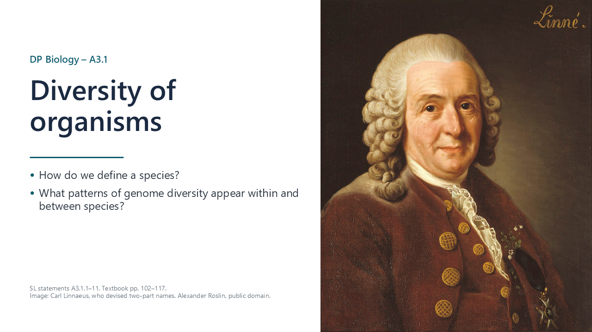
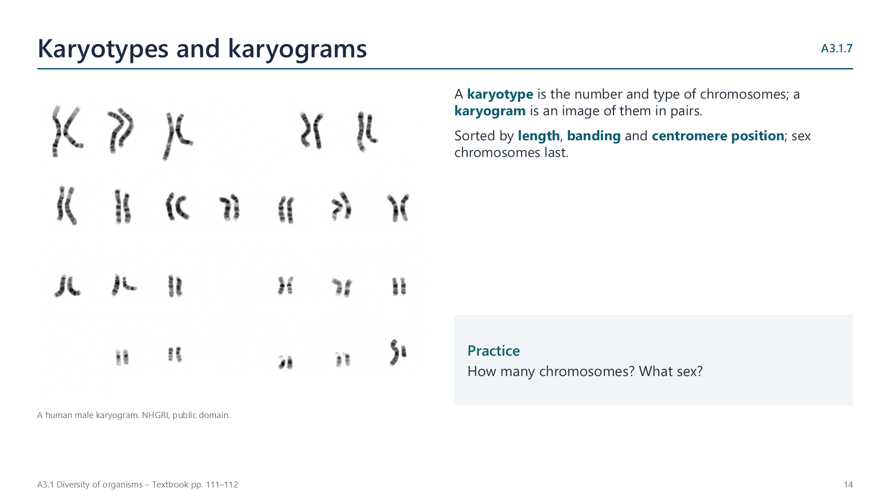
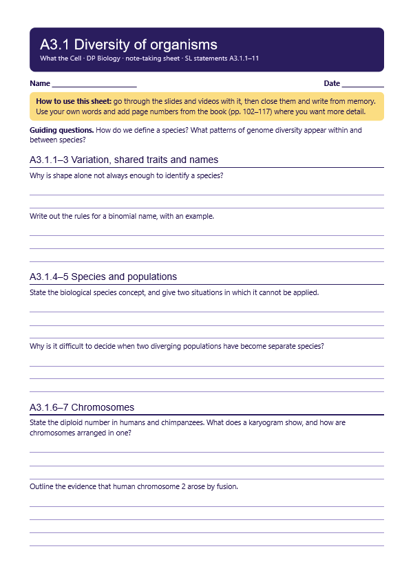
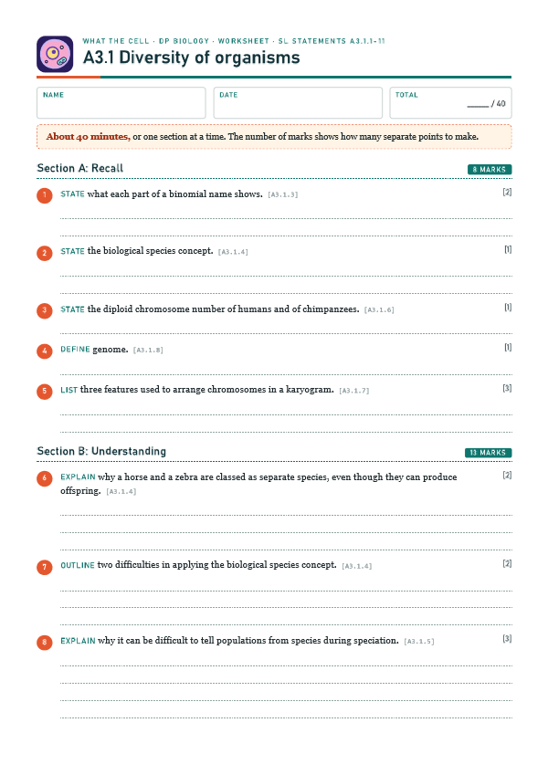

Variation is a defining feature of life
pp. 102–103No two individuals are identical in all their traits. These complex patterns of variation are the basis for naming and classifying organisms.

Written for this site from the class slides, with textbook page references for each statement. The chapter is on pages 102–117 of the course textbook. Image credits are on slide 29.
No two individuals are identical in all their traits. These complex patterns of variation are the basis for naming and classifying organisms.
Linnaeus grouped organisms by what they looked like and how they were built. This is useful, but it can mislead: some species look alike, and some members of one species look quite different.
A two-part name gives the genus, with a capital letter, and then the species, in lower case. Names are printed in italics and underlined when handwritten, as in Homo sapiens. Species in one genus have similar traits, and the names are understood worldwide.
A species is a group that can breed and produce fertile offspring. A horse and a zebra can produce young, but the young are normally infertile. The concept has limits: it cannot be used for asexual organisms or fossils, and other species concepts exist.
Speciation is one species splitting into two or more. It is usually gradual, with non-interbreeding populations becoming more different over time. There is no single point at which two populations clearly become two species.
Humans have 46 chromosomes and chimpanzees have 48. Numbers vary widely between plants and animals, and they do not show how complex an organism is.

A karyogram shows chromosomes in pairs, sorted by length, banding pattern and centromere position. Sex chromosomes come last.
Human chromosome 2 seems to have formed by the fusion of two ancestral chromosomes. It has telomere sequences near its middle, a second inactive centromere, and bands matching two chimpanzee chromosomes.
Watch out: humans did not evolve from chimpanzees. Both evolved from a shared ancestor.
A genome is all of an organism's genetic information. Members of a species share most of their genome, but variations such as single-nucleotide polymorphisms give some diversity.
Genomes vary in total size and in base sequence. Differences between species are much larger than differences within a species.
Data from genome databases show that size does not simply follow complexity. A lungfish has a genome many times larger than a human's, because much DNA does not code for proteins.
Sequencing has become far faster and cheaper. It is now used to research evolutionary relationships, and may in future allow personalized medicine.
Select a video to play it here. Select it again to close it.
Print this guide and complete it as you work through the slides and videos. It asks for your own explanations, so close the notes while you try each section.

The self-check needs JavaScript to run.
A printable worksheet covering all eleven statements, from quick recall to data questions and a longer answer. It has 40 marks and takes about 40 minutes, or you can do one section at a time.
Your teacher has the mark scheme.

You will need: Printed image of human chromosomes from a public genetics resource, scissors, glue
Safety: No practical hazards. Keep any discussion of conditions respectful.
Carry this out with your teacher's supervision and follow your school's lab rules.
For decades, textbooks said that humans have 48 chromosomes. Better techniques let Tjio and Levan count 46 in 1956.
Some researchers doubted their own counts because 48 was the accepted number. Consider how authority can affect what people report.
Summarised in our own words. Use each code to find the exact wording in your textbook or the IB subject guide.
© 2026 Akash Parthi Bendran. Please ask before using or sharing any resources from this site: see permission to use.